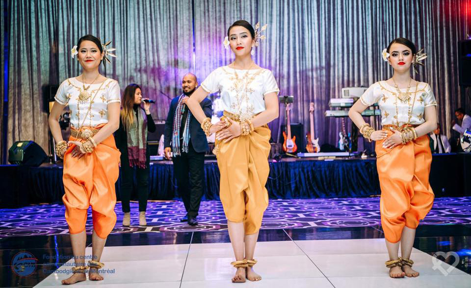
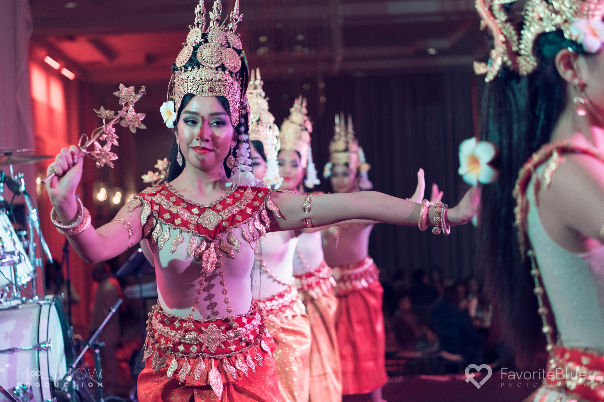
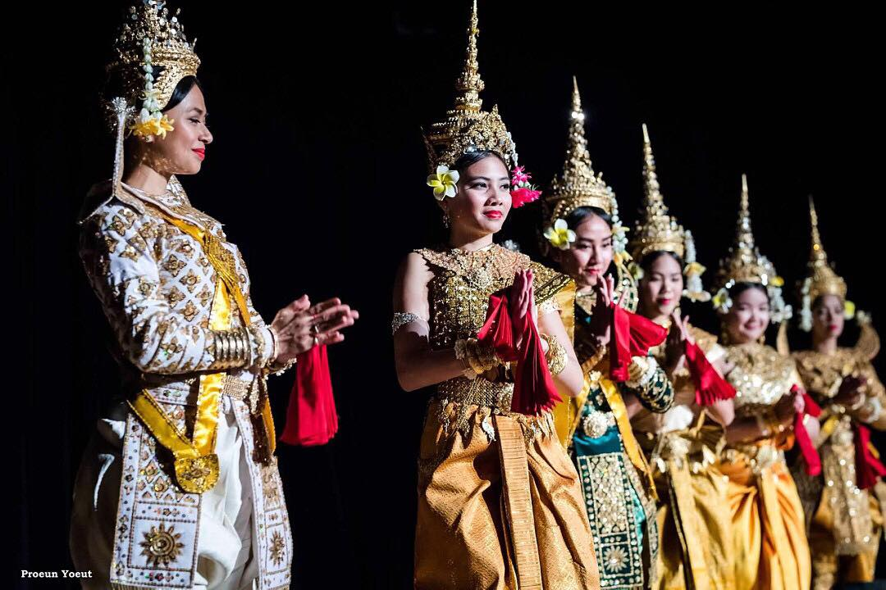
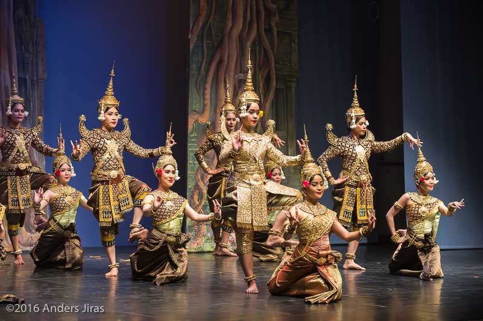

របាំជូនពរ
Robam joun por
La danse des bénédictions
est traditionnellement joué au début d'une cérémonie pour saluer, bénir et offrir de bons voeux au public en projetant des pétales de fleurs.

voir un extrait de la danse
របាំនារីជាជូ
Robam neary chear chour
La danse des filles en rang
est une danse traditionnelle cambodgienne de jeunes femmes khmères qui dansent en ligne avec des costumes colorés et élégants.
voir un extrait de la danse
របាំអប្សរា
Robam tep apsara
La danse des déesses Apsara
La danse Apsara au Cambodge est connue pour ses costumes, coiffes et accessoires magnifiquement conçus, tous basés sur les sculptures sur les murs d'Angkor Wat.

voir un extrait de la danse
របាំបួងស៊ុង
Robam boung soung
La danse de Brahma
Robam Boung Soung est une danse sacrée où le danseur joue le rôle d'une divinité masculine. Le chant sont des prières adressées aux divinités des quatre points cardinaux pour donner leurs bénédictions et leur protection à la nation et à son peuple. Un foulard magique est porté par la divinité.
voir un extrait de la danse
Robam Tep Monorom
La danse des dieux et déesses
របាំទេពមនោរម្យ
est souvent considérée comme la plus belle danse du répertoire classique. Il incarne l'amitié, la prospérité et le bien-être du peuple cambodgien. Les dieux et déesses entrent et sortent de la formation autour et à travers la scène, exprimant la félicité céleste.
voir un extrait de la danse
Robam phoung neary
La danse des demoiselles en fleur
បាំភួងនារី
la gestuelle et la mélodie décrivent la beauté d'une femme sans compromis et la compare à une fleur dorée.
Bien qu'elle soit pratique et forte, elle est également admirable et douce.
voir un extrait de la danse